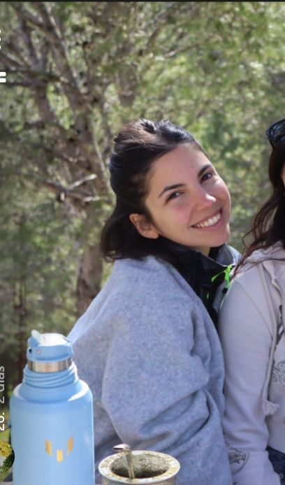

Bianca
Tamoni Rocca
Edad: 30 años
📍 Andalucía, España
🎓 Lic. Comunicación Digital
psychology
Habilidades
Programación
Diseño Web
Diseño UX/UI
Comunicación
movie
Películas que me se los diálogos
1. Lilo y Stich
2. Juego de gemelas
3. Shrek
music_note
Discos Favoritos
1. Fuerza Natural, Cerati
2. Group Therapy, Above and Beyond
3. YLQMDLG, Bad Bunny